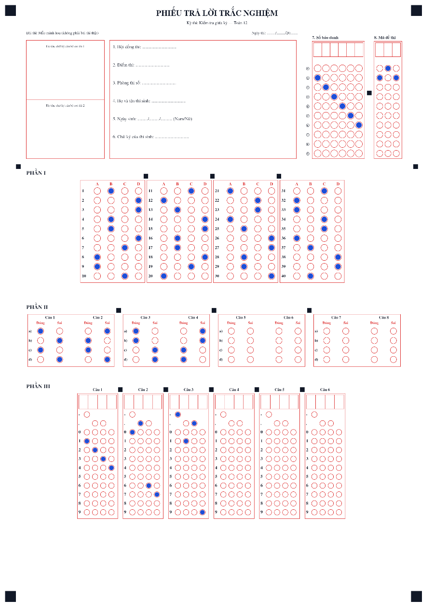
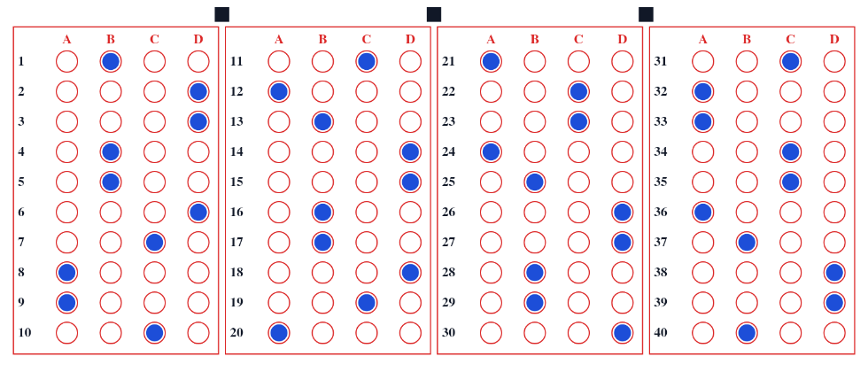
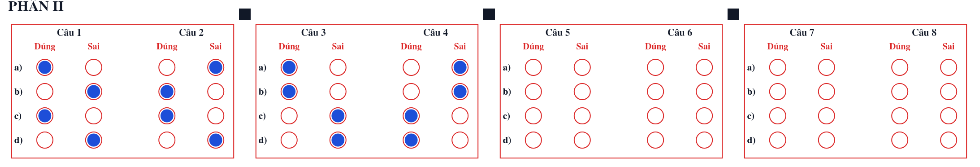
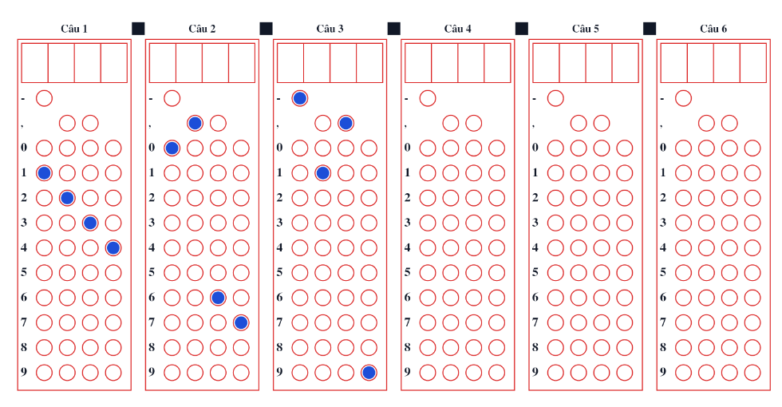

Giới thiệu ExamMark
ExamMark là ứng dụng Android giúp giáo viên soạn đề, trộn đề, in phiếu trả lời và chấm bài trắc nghiệm bằng camera điện thoại; ngoài ra hỗ trợ kỳ thi nhóm cho tổ bộ môn, chấm bài tự luận bằng AI (bản thử nghiệm) và giao bài, chấm thi online cho học sinh làm trên trình duyệt. Chấm trắc nghiệm bằng camera làm việc offline: ảnh phiếu được nhận dạng và chấm ngay trên máy, không cần máy chủ riêng hay máy quét chuyên dụng.
Ứng dụng giải quyết vấn đề gì?
- Chấm tay bài trắc nghiệm nhiều câu, nhiều mã đề rất tốn thời gian và dễ nhầm.
- Máy chấm chuyên dụng đắt, cần phiếu in sẵn và thường chỉ có ở trường lớn.
- Phần mềm chấm qua mạng đòi hỏi tải ảnh bài thi của học sinh lên máy chủ.
ExamMark dùng chính điện thoại của giáo viên làm “máy quét”, phiếu in được từ máy in thông thường, và dữ liệu học sinh ở lại trên máy của giáo viên (trừ ba trường hợp do bạn chủ động dùng: kỳ thi nhóm, chấm tự luận bằng AI và giao bài online — xem Quyền riêng tư).
Dành cho ai?
| Vai trò | Làm được gì |
|---|---|
| Giáo viên | Tạo mẫu phiếu, tạo kỳ thi, nhập đáp án theo từng mã đề, xây dựng ngân hàng câu hỏi và trộn đề, quản lý danh sách thí sinh, in phiếu, chấm bài bằng camera, xem lại bài mơ hồ, xem thống kê, xuất kết quả Excel/CSV, sao lưu lên Google Drive của chính mình; tải kỳ thi nhóm về chấm và gửi kết quả; chấm tự luận bằng AI (nếu gói license cho phép); giao bài cho học sinh làm online, theo dõi, chấm, nhận xét và gửi kết quả qua email bằng Phòng thi của chính mình. |
| Quản trị tổ chức / quản trị nhóm (tổ bộ môn, nhà trường có license tổ chức) | Mọi việc của giáo viên, cộng với: thêm thành viên bằng email, khoá/mở thành viên, phân bổ hạn mức thiết bị và xem thiết bị đang dùng; thiết lập Group Hub, tạo nhóm con, đẩy kỳ thi chung, xem tiến độ, duyệt/yêu cầu chấm lại, chốt kỳ thi và lấy biên bản; gửi yêu cầu hỗ trợ. |
| Nhà phát triển | Cấp và quản lý license, gỡ thiết bị khi cần, hỗ trợ kỹ thuật qua email; không truy cập được bài thi, danh sách học sinh hay dữ liệu kỳ thi nhóm của bạn (xem Quyền riêng tư). |
Học sinh không cần cài ứng dụng: các em tô phiếu giấy (chấm bằng camera) hoặc làm bài trên trình duyệt qua đường dẫn giáo viên gửi (giao bài online, không cần tài khoản Google).
Các chức năng chính
Tạo mẫu phiếu
Phiếu A4 hoặc A5 (dọc/ngang); chọn số câu từng phần, 4 hoặc 5 phương án, số chữ số của số báo danh và mã đề; xem trước và tải PDF.
Tạo kỳ thi & đáp án
Nhiều mã đề cho một kỳ thi; nhập đáp án trực tiếp, bằng Excel/CSV hoặc quét một phiếu đã tô sẵn đáp án.
Ngân hàng câu hỏi
Lưu câu hỏi kèm công thức LaTeX và hình; mã câu tự cấp; nạp từ Excel/CSV, lọc, nhặt theo ma trận đề.
Trộn đề & xuất đề
Sinh nhiều mã đề từ một đề gốc, ghi lại đáp án đã trộn; xuất Excel hoặc gói LaTeX.
Danh sách thí sinh
Nhập từ Excel/CSV hoặc thêm tay; tuỳ chọn mã QR để ghép đúng phiếu với đúng thí sinh.
Chấm bằng camera
Chụp hoặc chọn ảnh phiếu; app căn chỉnh theo 4 ô vuông ở góc, đọc số báo danh, mã đề, từng ô tô và chấm điểm.
Xem lại & sửa có truy vết
Câu mơ hồ được gắn cờ; sửa đáp án có ghi lại ai sửa, lúc nào, từ gì sang gì.
Kết quả & xuất tệp
Bảng điểm theo kỳ thi, thống kê điểm và độ chính xác từng câu, xuất Excel/CSV, ảnh bằng chứng chấm.
Kỳ thi nhóm
Tổ bộ môn cùng chấm một kỳ thi: giáo viên tải về chấm offline, quản trị duyệt, chốt và lập biên bản.
Chấm tự luận bằng AI Thử nghiệm
AI chép bài viết tay và chấm theo barem; giáo viên xem, sửa và duyệt; chia sẻ để đồng nghiệp rà soát.
Giao bài & chấm thi online Mới
Học sinh làm bài trên trình duyệt (có công thức, hình, đồng hồ, chống rời màn hình); chấm tự động, nhận xét, gửi kết quả và nhập về kỳ thi trong app. Dữ liệu nằm trong Google của bạn.
Sao lưu Google Drive
Tuỳ chọn, bạn tự bật. Tệp sao lưu nằm trong Drive của bạn, chỉ truy cập các tệp do ExamMark tạo.
Tổ chức nhiều giáo viên
License tổ chức: thêm thành viên theo email, hạn mức thiết bị cho từng người, nhóm con theo môn.
Một số chức năng (ví dụ tạo mẫu phiếu tuỳ chỉnh, xuất PDF, sao lưu Drive, số kỳ thi/thí sinh/lượt quét tối đa) phụ thuộc gói license. Gói dùng thử miễn phí 14 ngày (mặc định) có hạn mức thấp hơn các gói trả phí. Kỳ thi nhóm cần license tổ chức; chấm tự luận cần gói có quyền tự luận. Việc nhập kết quả giao bài online vào kỳ thi trong app tính 1 lượt quét cho mỗi bài.
Soạn đề từ ngân hàng, kỳ thi nhóm, chấm tự luận và giao bài online
Ngoài chu trình chấm trắc nghiệm, ExamMark có bốn nhóm chức năng mở rộng. Mỗi nhóm có hướng dẫn từng bước trong Hướng dẫn sử dụng.
Ngân hàng câu hỏi và trộn đề
Lưu câu hỏi (kèm công thức LaTeX và hình) trong máy, phân loại theo môn · khối · chủ đề · mức độ và tự cấp mã câu. Nạp hàng loạt từ Excel/CSV, nhặt câu theo ma trận đề rồi trộn thành nhiều mã đề: đảo thứ tự câu, đảo phương án và ghi lại đáp án đúng mới để chấm ngay. Xuất đề ra Excel hoặc gói LaTeX.

Kỳ thi nhóm (tab Nhóm)
Dành cho tổ bộ môn/nhà trường có license tổ chức. Quản trị nhóm đẩy một kỳ thi lên Group Hub (bảng tính Google do chính nhóm sở hữu); nhiều giáo viên tải về, chấm offline và gửi kết quả; quản trị nhóm theo dõi tiến độ, duyệt hoặc yêu cầu chấm lại, chốt kỳ thi và lưu biên bản. Ảnh bài làm không gửi lên Hub.

Chấm tự luận bằng AI Bản thử nghiệm
Chụp ảnh bài viết tay → AI chép lại → AI chấm từng ý theo barem → giáo viên xem bản chép, sửa điểm và duyệt; có thể chia sẻ gói cho đồng nghiệp rà soát. AI chỉ đề xuất, giáo viên quyết định. Cần Internet và khoá API của nhà cung cấp AI do bạn tự đăng ký.

Giao bài & chấm thi online (Phòng thi) Mới
Lấy câu từ ngân hàng câu hỏi hoặc từ một mã đề đã thiết lập, giao cho học sinh làm trên trình duyệt (hiển thị công thức Toán và hình vẽ). Giáo viên đặt thời gian, giờ mở/đóng, cách vào (mã học sinh + PIN hoặc họ tên + lớp), trộn câu/phương án/ý, chống rời màn hình và chính sách báo điểm; hệ thống chấm tự động, thống kê theo lớp, chủ đề, từng câu, viết nhận xét theo luật (không dùng AI), gửi kết quả qua email và cho phép nhập kết quả về kỳ thi trong app. Phòng thi chạy trên Google Apps Script/Sheet/Drive của chính giáo viên nên bài làm không đi qua máy chủ của ExamMark; học sinh không cần tài khoản Google.

Cấu trúc phiếu trả lời
Phiếu có ba phần theo cấu trúc đề trắc nghiệm hiện hành, cùng bảng tô số báo danh và mã đề:

Phần I — Nhiều lựa chọn
Mỗi câu 4 (hoặc 5) phương án A–D(E), chọn 1. Đúng thì được trọn điểm câu.

Phần II — Đúng/Sai
Mỗi câu có 4 ý a), b), c), d); với mỗi ý tô Đúng hoặc Sai. Điểm tính theo số ý đúng.

Phần III — Trả lời ngắn (đáp án số)
Mỗi câu có 4 ô: ô đầu có thể là dấu -; một trong hai ô giữa có thể là dấu phẩy ,; các ô còn lại là chữ số 0–9.
| Đáp án | Cách tô |
|---|---|
1234 | Tô lần lượt 1, 2, 3, 4 ở 4 cột |
0,67 | Cột 1: 0 · cột 2: dấu phẩy · cột 3: 6 · cột 4: 7 |
-1,9 | Cột 1: dấu trừ · cột 2: 1 · cột 3: dấu phẩy · cột 4: 9 |

Số báo danh và mã đề

Khổ A5: phiếu gọn cho kiểm tra nhỏ
Ngoài A4, ExamMark có bố cục A5 thiết kế riêng cho bài kiểm tra quy mô nhỏ: ô tô vẫn to bằng A4, bỏ khung chữ ký cán bộ coi thi, có khung Họ và tên – Ngày thi, ô Lớp, ô Điểm và bảng tô số báo danh + mã đề. Giới hạn: Phần I tối đa 12 câu, Phần II tối đa 4 câu, Phần III tối đa 6 câu.


Cách chấm điểm (trắc nghiệm)
| Phần | Quy tắc (mặc định) |
|---|---|
| I — Nhiều lựa chọn | Mỗi câu 0,25 điểm. Đúng được trọn điểm, sai hoặc bỏ trống 0 điểm. |
| II — Đúng/Sai | Mỗi câu 1,0 điểm, chia theo số ý đúng: 1 ý → 10%, 2 ý → 25%, 3 ý → 50%, 4 ý → 100% điểm câu. Ý bỏ trống hoặc chưa xác định tính là sai. |
| III — Trả lời ngắn | Mỗi câu 0,5 điểm. So khớp theo giá trị số: 0,67 và 0.67 như nhau, 1,50 bằng 1,5. Sai hoặc bỏ trống 0 điểm. |
Điểm mỗi câu có thể chỉnh theo từng câu, nên tổng điểm đề tuỳ ý bạn (ví dụ quy về thang 10). Với ô không xác định (tô hai đáp án trở lên) app tạm tính sai và gắn cờ “Xem lại” cho đến khi giáo viên sửa; ô tô nhạt nhưng đọc được vẫn được tính và cũng gắn cờ “Xem lại”.
Chấm tự luận: giáo viên nhập barem chia điểm theo từng ý; AI đề xuất điểm từng ý kèm lý do, điểm tổng do app cộng lại và không vượt điểm tối đa của từng ý. Bài AI không chắc, hoặc hai lần chấm lệch nhau, được gắn cờ “Cần xem lại”; mọi lần sửa điểm đều có lịch sử.
1) Chạy offline.
2) Không tự suy đoán khi tín hiệu mơ hồ — giao cho giáo viên quyết định.
3) Mọi lần sửa đáp án đều có nhật ký.
4) Dữ liệu học sinh ở lại trên thiết bị của giáo viên, trừ khi chính bạn chọn kỳ thi nhóm, chấm tự luận bằng AI hoặc giao bài online (khi đó dữ liệu nằm trong Google của bạn).
5) Với tự luận: AI đề xuất, giáo viên quyết định.
Giới hạn cần biết
- Hiện chỉ có bản Android (tệp APK). Chưa phát hành bản iOS.
- Chấm tự luận đang ở giai đoạn thử nghiệm: cần Internet, cần khoá API của nhà cung cấp AI, ảnh bài làm được gửi tới nhà cung cấp đó khi chấm, và AI có thể chép/chấm sai (nhất là chữ khó đọc, công thức phức tạp) nên giáo viên phải xem lại.
- Kỳ thi nhóm cần license tổ chức và quản trị nhóm thiết lập Group Hub một lần.
- Giao bài & chấm thi online cần Internet và một Phòng thi do chính giáo viên cài một lần bằng menu trong Google Sheet. Chống rời màn hình chỉ là răn đe và bằng chứng, không phải phòng thi khoá; Google giới hạn số học sinh vào thi cùng lúc (nên không quá khoảng 150 em một lượt) và số email gửi mỗi ngày. Chức năng còn mới, chưa kiểm chứng trên thiết bị Apple thật — hãy thử với vài máy trước kỳ thi thật.
- Ngân hàng câu hỏi/trộn đề: xuất đề ở dạng Excel và LaTeX (chưa dựng PDF đề trong app); ngân hàng và kho hình chưa nằm trong sao lưu Drive — hãy xuất Excel định kỳ.
- Chất lượng chấm phụ thuộc ảnh chụp: phiếu phải đủ 4 ô vuông góc, đủ sáng, không bóng đổ (xem mẹo chụp).
- Máy nhận dạng ô tô nhạt, tô đôi hay tô lệch có thể sai; vì vậy luôn kiểm tra các câu được gắn cờ “Xem lại” trước khi công bố điểm.
- Cần Internet khi kích hoạt và khi app làm mới license; nếu quá lâu không có mạng, app sẽ yêu cầu kết nối một lần mới tiếp tục quét/chấm.
Muốn bắt đầu? Xem Hướng dẫn sử dụng hoặc tải ứng dụng.